CardioVision
Research Intern at Thapar Institute.
Interpretable machine learningfor medicine and language.
I work on models that read retinal images, ECG and text, and on explaining what those models have learned.
Drag the eye. Scroll to read on.
Fig. 1 Retinal fundus, left eye. Photo: M. Häggström, CC0.
Computer Science undergraduate at Thapar Institute of Engineering & Technology, spending most of my time on research.

Research Intern at Thapar Institute.
Biomedical named entity recognition and how it holds up as entities drift over time, across encoder and generative model families. In legal NLP, statistically tested comparisons of fine-tuned encoders against zero- and few-shot open-weight LLMs.
Recovering the reward functions that explain an agent's observed behaviour, so that learned policies become interpretable.

The easiest way to reach me is LinkedIn.